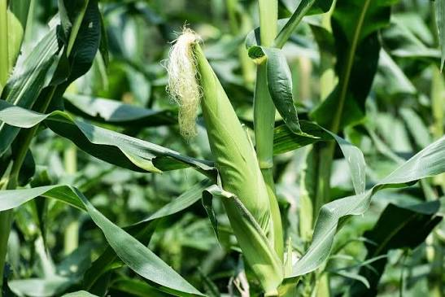

Mwongozo Kamili wa Kilimo Bora cha Mahindi Kitaalamu

1. Idara ya Maandalizi ya Shamba na Udongo
Maandalizi mazuri ya udongo yanaruhusu mizizi ya mahindi kusambaa vizuri na kufyonza virutubisho kwa urahisi zaidi ardhini.
- Kutayarisha ardhi: Lima shamba mapema kabla ya mvua kuanza (miezi 1-2 kabla) ili kuruhusu mabaki ya mimea kuoza na kugeuka mbolea.
- Hali ya udongo: Mahindi yanastawi vizuri kwenye udongo unaopitisha maji kwa urahisi (loam soil). Kiwango cha tindikali (pH) kiwe kati ya 5.5 hadi 7.0.
- Kuweka mbolea ya asili: Sambaza samadi au mboji tani 2–4 kwa ekari wakati wa kulima.
2. Idara ya Upandaji na Vipimo vya Nafasi
Kutumia vipimo sahihi vya upandaji kunasaidia mimea isigombanie mwanga, maji, na virutubisho chini ya ardhi.
Weka picha ya hatua ya kilimo hapaMfano: maandalizi, upandaji au ulishaji
| Mfumo wa Upandaji |
Kati ya Mstari na Mstari |
Kati ya Shimo na Shimo |
Idadi ya Mbegu |
| Mbegu Moja kwa Shimo |
75 Sentimita (75 cm) |
25 Sentimita (25 cm) |
Mbegu 1 |
| Mbegu Mbili kwa Shimo |
75 Sentimita (75 cm) |
50 Sentimita (50 cm) |
Mbegu 2 |
3. Idara ya Lishe na Uwekezaji wa Mbolea
Mahindi yanahitaji madini ya Nitrojeni (N) na Fosfari (P) kwa wingi ili kutoa mazao mengi [1.3].
Awamu ya Kwanza: Mbolea ya Kupandia (Fosfari - P)
Kiwango cha kawaida cha kitaalamu ni kilo 50 za DAP kwa ekari moja [1.3]. Weka kijiko kimoja cha chai kwa kila shimo na uchanganye na udongo kabla ya kuweka mbegu [1.3].
Weka picha ya mavuno au soko hapaMkulima ataongeza picha halisi baadaye
Awamu ya Pili: Mbolea ya Kukuzia (Nitrojeni - N)
Kiwango cha kutosha ni kilo 100 za UREA au CAN kwa ekari moja zilizogawanywa mara mbili [1.3]. Weka kilo 50 wiki ya 2-3 baada ya kuota, na kilo 50 zilizobaki wiki ya 5-6 mahindi yakiwa urefu wa goti au kiuno [1.3].
4. Idara ya Mbegu: Aina za Mbegu Bora (Tanzania)
Uchaguzi wa mbegu unapaswa kuzingatia mwinuko wa eneo lako kutoka usawa wa bahari. Kwa ekari moja, kiwango cha mbegu ni kilo 10 [1.3]:
- Nyanda za Juu (Baridi & Mvua Nyingi): Miezi 6-8 kukomaa. (Mifano: Uhai H628, Seed Co SC 719, Pannar PAN 691).
- Nyanda za Kati (Mvua za Wastani): Miezi 4-5 kukomaa. (Mifano: Stuka M1, Seed Co SC 627, Kibo H614).
- Nyanda za Chini na Pwani (Joto & Mvua Chache): Miezi 3-4 kukomaa. (Mifano: TMV1, Situka, Seed Co SC 403).
5. Idara ya Ulinzi: Kudhibiti Magugu, Wadudu na Magonjwa
Palizi ya kwanza ifanyike wiki 2-3 baada ya kuota [1.3]. Mdudu mkuu wa kupambana naye ni Kiwavi Jeshi wa Masuke (Fall Armyworm) [1.3]. Tumia dawa zenye viambata vya Emamectin Benzoate kupiga vita wadudu hawa [1.3].
Tahadhari ya Ugonjwa wa Mnyanyuko wa Majani (MLND)
Ugonjwa huu unakausha majani kuanzia pembeni na kudumaza mmea kabisa [1.3]. Udhibiti: Ng'oa na choma moto mimea yote iliyoambukizwa shambani [1.3].
6. Idara ya Uvunaji na Uhifadhi wa Mazao
Uvunaji na uhifadhi usio salama husababisha upotezaji wa mazao na hatari ya kupata sumu kuvu (Aflatoxin) [1.3].
- Alama za Kukomaa: Maganda yanageuka rangi ya kahawia, na mbegu inapata doa leusi chini yake (black layer) [1.3].
- Uhifadhi: Kausha mahindi juu ya maturubai hadi unyevu ufikie 12% - 13.5% [1.3]. Tumia mifuko ya kisasa inayozuia hewa kuingia (Hermetic Bags kama PICS) ili kuzuia dumuzi [1.3].